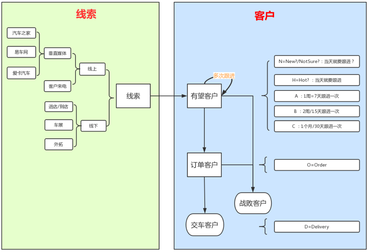
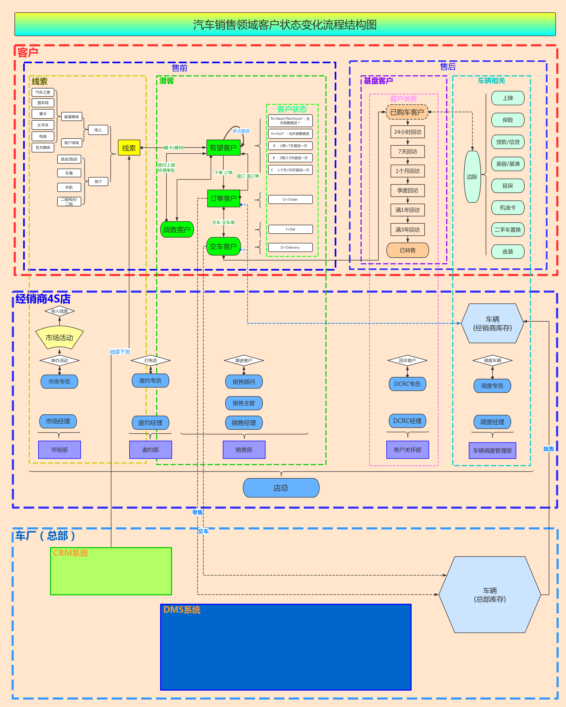

汽车销售全过程概览
在汽车销售领域，基本的客户状态变化可以用下图表示：

即，从线索到客户（潜客）。
汽车销售领域客户状态变化流程结构图
而后续整理出了更详细的流程汽车销售领域客户状态变化流程结构图：

最新版本的在线分享
想要最新版本的整理，可以去在线分享的地址中查看：
汽车销售领域客户状态变化流程结构图 的解释
下面对《汽车销售领域客户状态变化流程结构图》进行一个必要的解释：
颜色设计：红方和蓝方
从上图的颜色构思角度来说：
蓝军=我方=4S店
：4S店的所有人，算作一个总体的团队，齐心协力，共同目的目标就是：红色的目标：客户，想尽一切办法，让其尽快买车- 且尽量买车之后，后续订单和交车的相关的业务，都在我们4S店办理
- 且买车的长远之后的，售后和保养，都尽量来我店处理
- 如果可能，等二次换车，也来我店买
- 4S店的
友军是（背后撑腰的）车厂- 负责批售车辆给4S店
- 4S店的订单和交车数据也会上报给车厂
- 用于获得车厂店返现和补贴
红军=敌人=客户
：要买车店客户- 被4S店
攻击的对象 - 但是拥有自己的自主权
- 是否买车，取决于各种条件
- 包括价格
- 服务体验
- 其他相关内容处理的是否合适
- 被4S店
不同维度
过程角度：售前和售后
从过程先后分：
- 售前
- 售后
对象角度：客户和4S店
从涉及的对象分：
- （线索->）客户
- 4S店（+经销商集团+车厂）
不同纬度的交叉的逻辑和过程
可以看到，对于客户的，从售前的潜客和客户，到售后的基本客户，分布对应着下面的4S店的不同的人，在客户的不同阶段，处理不同的事情，以促成客户买车和相关事宜。
下面来简单解释一下，两种不同纬度上下交车的具体过程：
| 过程角度 | 对象角度 | 交叉负责的事情 | |
|---|---|---|---|
| 核心流程说明 | |||
| 售前 的 线索 | 4S店 的 市场部 | 市场部门会负责办理集客类的活动，收集有购车意向的客户的信息，作为线索 | |
| 售前 的 线索 | 4S店 的 邀约部 | 邀约主管会把导入的线索分配给邀约专员 邀约专员负责（通过手机号）给线索打电话 把无效的线索过滤掉，找到有效的号码 对于接了电话的有意向购车的客户，收集基本信息，建档，成为有望客户 |
|
| 售前 的 未邀约到店 的 有望客户 | 4S店 的 邀约部 | 邀约专员继续对有望客户跟进，直到邀约到店：和客户谈好什么时候来4S店 | |
| 售前 的 来店 的 有望客户 | 4S店 的 销售部 的 前台 | 前台对于来店的客户，会询问谁邀请过来的，然后分配给某个的销售顾问继续跟进 | |
| 售前 的 已邀约已到店 的 有望客户 | 4S店 的 销售部 的 销售顾问 | 销售顾问对于有望客户进行多次跟进，正常情况下，客户的购车意向级别从最开始的N，慢慢的变成C -> B -> A -> H，然后最终下单成为订单客户 | |
| 售前 的 订单客户 | 4S店 的 销售部 的 销售顾问 | 销售顾问继续跟进，直到客户真正提车，成为 交车客户 | |
| 售后 的 基盘客户 | 4S店 的 客户关怀部 的 专员 | 专员对于已购车的基盘客户进行回访，且分别是间隔不同时间回访，以提高客户满意度 | |
| 售后 的 基盘客户 | 4S店 的 维修部门 | 如果客户车子出问题了，过来4S店进行维护，就会涉及到维修部人员维修车辆 | |
| 其他相关说明 | |||
| 售前 的 线索 | 车厂有相关的CRM等系统，从其他渠道得到线索后 会从车厂下发线索到4S店的系统中 |
||
| 售前 的 交车客户 和 订单客户 | 4S店的 车辆管理部 负责匹配 车辆 4S店的售后相关其他部门 |
在交车和订单的过程中，都会涉及到： 库存 各种边际，比如上牌、保险等等事宜 |
|
| 售前的 客户 的 交车 和 订单 | 4S店的系统中会有订单和交车单 | 对应着4S店系统会上报到车厂的 交车 和订单的系统中 | |
| 4S店的年度有个批售的资金计划 | 对应着车厂会批售车辆给经销商，从总部库存运输到经销商4S店的库存 |
汽车销售领域流程总结
整个汽车销售的过程，可以用一句话概括： （4S店的各个部门的）一堆人努力促成（作为一个）客户（的你）尽快买车